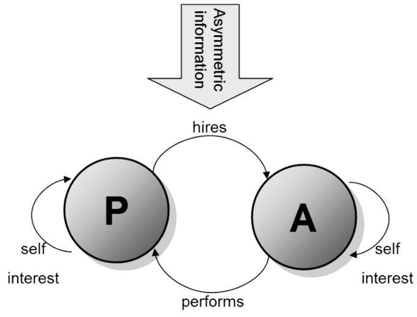
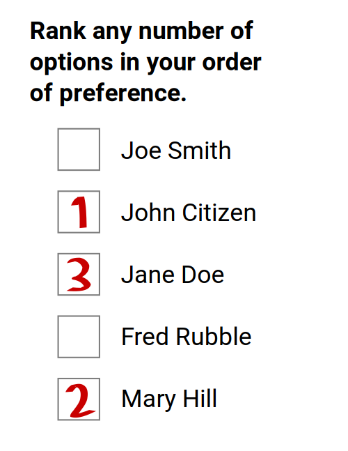
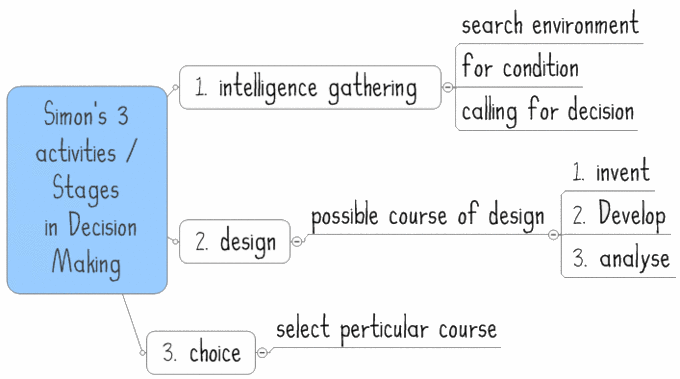
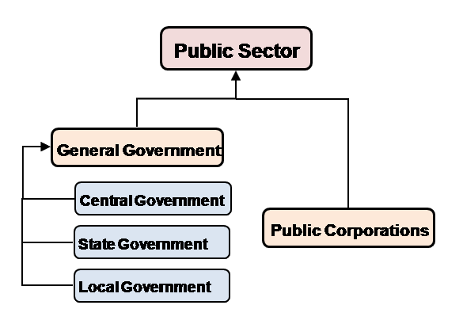

Asymmetric information, different information between two parties, leads to the following - adverse selection, moral hazards, and market failure.
Examine the concept of adverse selection in the context of imperfect information
Asymmetric information means that one party has more or better information than the other when making decisions and transactions. The imperfect information causes an imbalance of power. For example, when you are trying to negotiate your salary, you will not know the maximum your employer is willing to pay and your employer will not know the minimum you will be willing to accept.
Accurate information is essential for sound economic decisions. When a market experiences an imbalance it can lead to market failure.
Adverse selection is a term used in economics that refers to a process in which undesired results occur when buyers and sellers have access to different/imperfect information. The uneven knowledge causes the price and quantity of goods or services in a market to shift. This results in "bad" products or services being selected. For example, if a bank set one price for all of its checking account customers it runs the risk of being adversely affected by its low-balance and high activity customers. The individual price would generate a low profit for the bank.
In addition to adverse selection, moral hazards are also a result of asymmetric information. A moral hazard is a situation where a party will take risks because the cost that could incur will not be felt by the party taking the risk . A moral hazard can occur when the actions of one party may change to the detriment of another after a financial transaction. In relation to asymmetric information, moral hazard may occur if one party is insulated from risk and has more information about its actions and intentions than the party paying for the negative consequences of the risk. For example, moral hazards occur in employment relationships involving employees and management. When a firm cannot observe all of the actions of employees and managers there is the chance that careless and selfish decision making will occur.
An insured driver getting into a car accident is an example of a moral hazard. The driver will take risks because the cost is not directly felt due to a transaction. The insurance company pays for the accident and not the driver.
Asymmetric information starts the downward economic spiral for a firm. A lack of equal information causes economic imbalances that result in adverse selection and moral hazards. All of these economic weaknesses have the potential to lead to market failure. A market failure is any scenario where an individual or firm's pursuit of pure self interest leads to inefficient results.
The principle-agent problem (agency dilemma) exists when conflicts of interest arise between a principal and an agent in a business setting.
Explain the Principal-Agent Problem
In economics, the principal-agent problem (also known as an agency dilemma) exists when conflicts of interest arise between a principal and an agent in a business setting . Conflicts usually exist when contracts are written due to uncertainty and risk taken on by both parties. The principal hires the agent to perform specific to duties that represent its best interest. The work that is performed can be costly to the agent and not in the principal's best interest. In short, the work done by the agent doesn't actually reflect the best interests of the principal. Examples of relationships that can experience the principal-agent problem include:
The diagram shows the basic idea of the principle agent problem. P is the principle and A is the agent. It clearly illustrates the working relationship between the principle and the agent while highlighting the presence of business partnership as well as self-interest.
The conflict of interest potentially arises in almost any context where one party is being paid by another to do something, whether it is in formal employment or a negotiated deal. The two parties have different interests and asymmetric information. The deviation of the agent from the principals interest is referred to as "agency costs. "
In order to minimize and control economic conflict, principals and agents design and agree on a contract. It serves as a guide and agreement to safeguard the best interests of both parties. The linear model is used to determine incentive compensation in a contract: w = a + b(e + x + gy).
In the linear model w is the wage, a is a constant, e is the unobserved effort, x is the unobserved exogenous effects on outcomes, and y is the observed exogenous effects; while g and a represent the weight given to y , and the base salary.
A business contract creates a straightforward connection between agent performance and profitability. This connection sets the standard for judging the performance of the agent.
In business relationships, the principal will use performance evaluations to ensure that the agent is fulfilling the necessary duties. There are two forms of performance evaluation:
Incentive structures are used in business relationship in order to bridge the gap between best interests of the principal and the agent.
Principals offer various incentive structures, which are rewards or motivating factors that drive the agent to work in the best interest of the principal and complete tasks efficiently. Incentive structures include price rates/commissions, profit sharing, and efficiency wages.
It is usually in best interest of both parties to work together. For the principal, agent inefficiency results in sub-optimal results and low welfare. For the agent, efficiency is important in order to receive payment for work completed.
Public choice may not lead to an economically efficient outcomes due to who votes, why they vote, and in what system they vote.
Use the Condorcet paradox to evaluate voting systems
A voting system is a method by which voters choose between multiple options, usually in an election or policy referendum. The system enforces rules to ensure valid voting, accurate tabulation, and a final result. Common voting systems include majority rule, proportional representation, or plurality voting. The study of voting systems is called voting theory. Voting theory is a subfield of economics.
No matter what voting system is used, the act of voting gives the public the ability to choose a candidate or influence a decision. Obviously, when voting takes place not everyone will agree with the outcome, but everyone has the ability to participate in the process. Public choice is described as "the use of economic tools to deal with traditional problems of political science. " In microeconomics, public choice analyses collective decision making and studies economic models of political processes including rent-seeking, elections, legislatures, and voting behavior.
Since not every voter participates in an election, not every voter will have full information, and not every voter will vote based on what s/he perceives as the best long-term outcome, voting outcomes may be inefficient. Elections do not necessarily reflect the best long-term outcome, what the active voters thought was best given their criteria at the time.
The Condorcet paradox is a voting paradox where collective preferences can be cyclical. It is a paradox because the wishes of the majority can conflict with one another. Conflicting majorities are made up of different groups of individuals. For example, the Condorcet paradox can be compared to the game rock/paper/scissors. For each candidate, there can be another that is preferred by some majority. The Condorcet method of voting consists of any election method that elects candidate that would win by majority rule in all pairings against the other candidates. Most Condorcet voting methods consist of a single round of voting where individuals rank their top choices. In the event of a tie or unclear winner (Condorcet paradox) alternate methods of determining a winner are used including tie breakers, additional rounds of voting, etc.
An example of a voting paradox can be seen in a simple voting scenario. There are three candidates including 1, 2, and 3. There are three voters with preferences. Each voter ranks the candidates from most to least favored . If the results are determined and 3 is the winner, it can be argued that another candidate should have won due to the number of preferred votes verse the first choice of each voter. In this case, the requirement of majority rule does not provide a clear winner. According to the Condorcet paradox additional methods would be needed to determine the winner since the voting process is complex and each voter provides preferences instead of only selecting one candidate.
The Condorcet paradox is used to evaluate voting systems. Voters rank candidates according to their own preferences. The Condorcet method states that a candidate wins by majority rule.
The Condorcet paradox means that there is not a clear winner and ambiguities must be resolved to determine the election results.
Behavioral economics is the study of the effects of social, cognitive, and emotional facts on the financial decisions of individuals and institutions.
Paraphrase the history and characteristics of behavioral economics
Behavioral economics is the study of the effects of social, cognitive, and emotional factors on the economic decisions of individuals and institutions. It also studies the consequences for market prices, returns, and resource allocation. Behavioral economics focuses on the bounds of rationality of economic agents.
Behavioral economics has specific characteristics based on what is studied. Areas of focus include:
There are many aspects in behavioral economics, and three of the most prevalent are:
Behavioral economics focuses on the study of how and why individuals and institutions make economic decisions .
This graph shows the three stages of rational decision making that was devised by Herbert Simon, a notable economist and scientist.
Behavioral economics was born out of the combination of economics and psychology. By 1979, economists used cognitive psychology to explain economic decision making, which included an editing stage and an evaluation stage. The editing stage simplified risky situations using heuristics of choice. The evaluation stage evaluated risky alternatives through the study of dependence, loss aversion, non-linear probability weighting, and sensitivity to gains and losses. Throughout its history, behavioral economics has studied the economic choices of individuals and institutions by analyzing psychology against economic research. The study of behavioral economics shows both the strengths and weaknesses in decision making tendencies and how the decisions impact economic choices.
Government failure occurs when possible interventions are not analyzed before action is taken regarding market inadequacies.
Analyze situations in which the government has failed to act in an economically optimal way
Government failure, also known as non-market failure, is the public sector version of market failure . The market fails and government intervention causes a more inefficient allocation of goods and resources than would occur without the intervention. It occurs when the market inadequacies are not compared and analyzed against possible interventions before action is taken. Government failure can be described as providing "only limited help in prescribing therapies for government success. "
This graph shows the layers of the government. The government is tied directly to the public sector. Government failure is an analogy made by the public sector when market failure occurs.
A government failure is not the failure of the government to enact a solution to a failure, but rather it is a systematic problem that prevents an efficient government solution to the problem. Government failures can occur in relation to both supply and demand within a market. Demand failures are the result of preference/revelation problems and the imbalance of voting and collective behavior. Supply failures are usually the result of principal-agent problems. In this case, the failure occurs in trying to get one party (agent) to work in the best interest of another party (principal).
There are specific scenarios that are directly associated with government failure. Economic crowding out occurs when the government expands its borrowing to pay for increased expenditure or tax cuts. The expanded borrowing is in excess of its revenue which crowds out private sector investment due to higher interest rates. Government spending also crowds out private spending.
When analyzing government failure, inefficient regulation contributes to market failure. The are three specific regulatory inefficiencies:
Recent evidence has suggested that even when democracies are economically stable, transparency, media freedom, and a larger government all contribute to increased government corruption. Government corruption leads to both market and government failure.
{kind=link}
{kind=link}
{kind=link}
{kind=link}